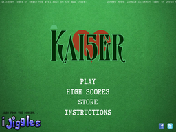
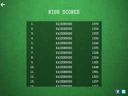
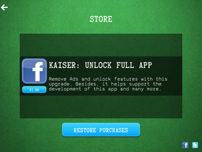
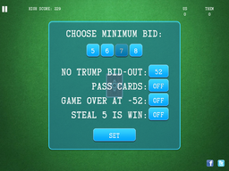
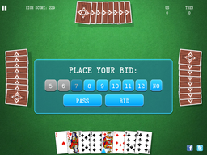
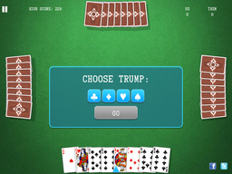

Kaiser, or three-spot, is a trick-taking card game popular in the prairie provinces in Canada, especially Saskatchewan and parts of its neighbouring provinces. It is played with four players in two partnerships with a 32-card deck.
The origins of this game are a mystery and there seems to be no historical record (spoken or written) that justifies it being a solely Saskatchewan-area game. It is especially popular among Ukrainian communities, and was possibly brought to Canada by Ukrainian immigrants, although it is not now played in Ukraine.
Kaiser is played by four people: two teams of two players each. Unlike many card games, only 32 cards are used out of a normal 52-card deck. The deck contains the cards from 8 to ace inclusively (8, 9, 10, jack, queen, king, ace) for each suit. The other four cards are the 7 of ♣, 7 of ♦, 5 of ♥ and 3 of ♠. All 32 cards are dealt out: 8 to each player. The cards may be dealt in any order to any player at so long as each player ends up with 8 cards.
In a clockwise manner, starting with the player to the dealer's left, each player may bid on the number of points that he believes he can make. The minimum bid is established before the game, with the most common value being 7. Players must bid higher than the current bid or pass, with the exception of the dealer who may take the bid at the current value. A bid is only for the number of tricks and not which suit will be trump, with the exception of a no-trump bid. Bids range from the minimum bid to 12 with a no-trump bid being greater than a trump bid (for example, 8 no-trump is larger than an 8 bid but smaller than a 9 bid). After a successful bid, the person who won the bid declares trump (unless it was a no-trump bid) and plays any card they choose. If no players bid then the dealer must make a "forced bid" for the set minimum bid (although he can pick any suit or no-trump). Players must follow suit if able (they cannot "trump in" if they have a card in the suit that was led). The player who played the highest card in that suit if no trump has been played or the player who played the highest trump card takes the trick and plays the next card of their choosing. That trick is worth one point towards their score, unless it contains the 5 of ♥ or 3 of ♠. The trick that contains the 5 of ♥ is worth an extra 5 points (+6 net), while the trick that contains the 3 of ♠ (the "three-spot") is worth 3 fewer points (−2 net). Play continues until all cards have been played.
There are two special types of bids: no-trump and kaiser. A successful no-trump bid will mean that there are no trump cards. Simply, the highest card played (following suit) wins the trick. A kaiser bid is equivalent to a 12 no (no-trump) bid. To make 12 points, the bidder (not the team—note this is the only type of bid in the game of Kaiser where the member of the team taking the trick makes a difference) must take seven tricks, including the 5 of ♥, while forcing the opposing team to take the 3 of ♠ in the one remaining trick. In the very rare case of a kaiser bid, the bidding team immediately wins the game (or loses, in the event of an unsuccessful result).
Once all cards have been played, each team counts up the number of points they have made. If the bidding team made at least the amount they bid, they score the number of points they made (or twice that amount for a no-trump bid). If they did not, they lose the amount they bid (or twice the amount they bid for a no-trump bid). The opposing team gains the amount of tricks they have made and adds that to their score, unless they are at "bid-out". The bid-out point is where a team must bid in order to count an increase in points. This point is usually 45 to 47 and is calculated by subtracting the agreed-upon minimum bid from 52. The game ends when a team bids and gets to 52 points, at which point they are declared the winner. One variation increases the number of points to win from 52 to 62 if a no-trump bid is made. This also increases the bid-out point by 10 points.
|  |
When the app starts, the main title screen is shown.
|
|  | The "High Scores" list shows the highest scores achieved by players. Press the back arrow to return the the main title screen. |
|  | The "App Store" list shows the current purchases available in the app store for this app. Upgrading to the full app removes advertisements and unlocks new features and game variations. |
|  |
**ONLY IN THE FULL VERSION OF THE APP** When a new game is started, you can choose some common variations on gameplay.
|
|  | Places your bid. If you bid lower than the current top bid, the result is a pass. Toggle "no" for a no trump bid. |
|  | Choose your trump. |
Instructions Text from Wikipedia